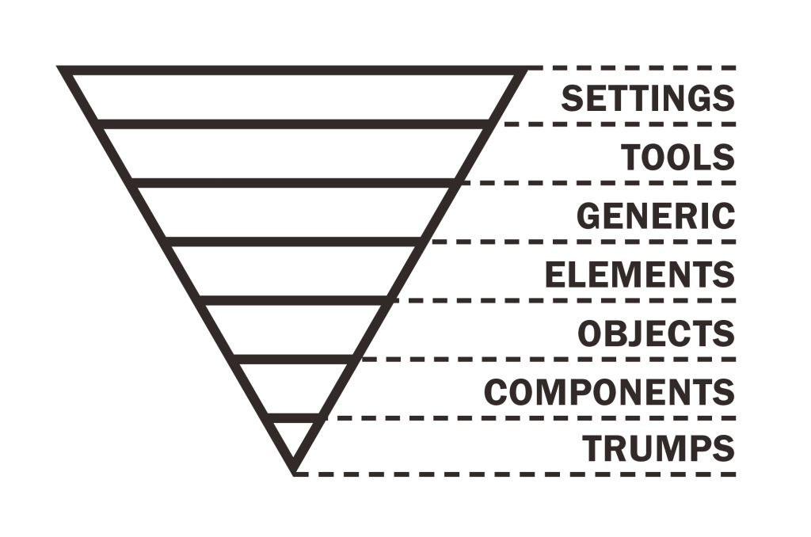

¿Qué es ITCSS?
ITCSS (Inverted Triangle CSS) es una metodología de organización y estructura de CSS diseñada para gestionar de manera escalable y eficiente proyectos grandes, colaborativos y complejos. Su objetivo principal es organizar los estilos desde los más generales hasta los más específicos, siguiendo un enfoque de pirámide invertida. Este modelo permite que los estilos base y globales se definan primero, mientras que las reglas más específicas y locales se aplican más tarde, creando una jerarquía que evita la sobrescritura y mejora la mantenibilidad del código.
¿Por qué usar ITCSS?
- Evita estilos desorganizados y sobreescrituras innecesarias.
- Facilita la colaboración en equipo.
- Mejora el rendimiento y mantenimiento del código CSS.
- Fomenta la reutilización y consistencia visual.
Visualiza la estructura ITCSS
Capas de ITCSS
1. Settings: Variables globales como colores, fuentes, etc.
2. Tools: Funciones, mixins (Sass), utilidades globales.
3. Generic: Reset CSS, normalize, reglas universales.
4. Elements: Estilos para etiquetas HTML (`h1`, `p`, `a`, etc).
5. Objects: Estructuras sin estilos visuales, como `.o-layout`, `.o-media`.
6. Components: Botones, tarjetas, menús, etc.
7. Trumps: Clases utilitarias que sobrescriben reglas anteriores (`.text-center`, `.mt-5`).
Ejemplo en código
/* SETTINGS */
:root {
--primary-color: #0d6efd;
}
/* TOOLS */
/* (Ejemplo de mixin en Sass) */
@mixin flex-center {
display: flex;
align-items: center;
justify-content: center;
}
/* GENERIC */
* {
margin: 0;
padding: 0;
box-sizing: border-box;
}
/* ELEMENTS */
body {
font-family: 'Poppins', sans-serif;
background-color: #f5f5f5;
}
/* OBJECTS */
.o-container {
max-width: 1200px;
margin: 0 auto;
}
/* COMPONENTS */
.btn {
padding: 0.6rem 1.2rem;
border-radius: 0.3rem;
}
/* TRUMPS */
.text-center {
text-align: center;
}Ejemplo interactivo
Haz clic para aplicar una clase Trump que sobrescribe estilos: